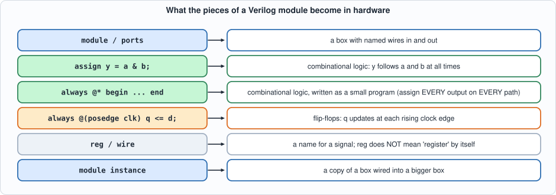
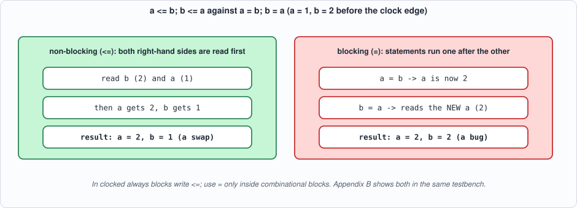

Appendix B. Verilog¶
About the animals in this picture and where they are standing
- Iberian ibex (Capra pyrenaica) lives in the mountains of Spain and Portugal. Its Pyrenean subspecies, the bucardo, died out in 2000. In 2003 scientists cloned one; the kid lived only minutes, making it the first extinct animal to be cloned.
- Markhor (Capra falconeri) lives in the mountains of Pakistan, Afghanistan and neighbouring regions. The males' horns twist in a corkscrew; the name is often explained as Persian for 'snake-eater'. It is Pakistan's national animal, and community-based conservation has helped some populations recover.
- Domestic goat (Capra hircus) descends from the bezoar ibex and is among the oldest domesticated animals. There are on the order of a billion of them, kept for milk, meat, fibre and as pack animals.
- West Caucasian tur (Capra caucasica) lives only in the western Caucasus, on steep slopes above the forest line. Its horns are short and heavy, curving outward and back, and it moves up and down cliffs with ease.
The scene is imaginary: it is set on the Moon: gravity about a sixth of Earth's, and an Earth hanging in the black sky. The animals are stylised drawings, shown where they could not live, for effect.
Who this is for: readers who will read or write the RTL in this book. Verilog describes hardware, not a program: a module is a structure that exists all the time, and the language's statements describe wires and registers, not a sequence of steps. This appendix covers the synthesizable subset the book uses, the three or four mistakes that account for most bugs, and how a design is tested. The demonstration modules (rtl/appx_b.v) and their self-checking testbench (tb/appx_b_tb.v) run in both simulators and are tested by mutation like every other circuit in the book.
The shape of a module¶
module name #(parameter W = 8) (input clk, input [W-1:0] a, output [W:0] y);
wire [W-1:0] t; // wires carry values between pieces
reg [W-1:0] r; // a reg is a variable that a procedural block assigns
assign t = a ^ 8'hFF; // continuous assignment: t is ALWAYS a XOR 0xFF
always @(posedge clk) r <= t; // clocked block: flip-flops
assign y = {1'b0, r}; // concatenation: {high, low}
endmodule
A module has ports (inputs and outputs, with widths), parameters (constants set when it is used), internal wires and regs, and a body of assignments, procedural blocks and instances of other modules. Numbers are written width'base value: 8'hFF, 4'b1010, 12'd2047; {4{x[7]}} repeats a bit four times (sign extension).

Figure B.1: what each construct means in hardware.reg is only a language word for "assigned inside an always block"; whether it becomes a flip-flop or just a wire depends on the block.
Combinational and sequential blocks¶
assign y = expr;is combinational:yfollows its inputs at all times.always @* begin ... endis also combinational, written like a program. The rule: assign every output on every path (giveifanelse,caseadefault). If a path leaves an output unassigned, the output must remember its old value, and synthesis builds a latch, a memory element you did not ask for. The script shows it: the same multiplexer with and without adefaultsynthesizes to a$dlatchin one case and none in the other, and Yosys warns Latch inferred for signal.always @(posedge clk) ...is sequential: its assignments update flip-flops at each rising edge.
Blocking and non-blocking assignment¶
The most important rule of the language: in a clocked block use <= (non-blocking); in a combinational block use = (blocking). A non-blocking assignment reads every right-hand side before any left-hand side changes, exactly as flip-flops sampling at the same edge. A blocking assignment takes effect at once and the next statement sees it. The demonstration modules swap two registers both ways: with <= the pair swaps; with = the second statement reads the already-changed value and both registers end up equal, which the testbench checks.

Figure B.2: the same two statements, two meanings.The pieces tested here¶
// Appendix B: the pieces of the Verilog primer, small enough to read in one sitting.
// 1. A synchronous Gray-code counter: only one output bit changes per step. Clocked block, non-blocking assignments, synchronous reset, enable.
module gray_cnt #(parameter W = 4) (input clk, input rst, input en, output [W-1:0] g);
reg [W-1:0] b;
always @(posedge clk) if (rst) b <= 0; else if (en) b <= b + 1'b1;
assign g = b ^ (b >> 1); // binary to Gray: a combinational continuous assignment
endmodule
// 2. Swapping two registers. With non-blocking assignments (<=) both right-hand sides are read before either register changes: a true swap.
module swap_nb (input clk, input rst, output reg [3:0] a, output reg [3:0] b);
always @(posedge clk) if (rst) begin a <= 4'd1; b <= 4'd2; end else begin a <= b; b <= a; end
endmodule
// With blocking assignments (=) the second statement sees the new value of a: both registers end up equal. A classic mistake in clocked blocks.
module swap_blocking (input clk, input rst, output reg [3:0] a, output reg [3:0] b);
always @(posedge clk) if (rst) begin a = 4'd1; b = 4'd2; end else begin a = b; b = a; end
endmodule
// 3. A combinational block that forgets a case: when sel == 3 the output must hold its old value, so synthesis inserts a LATCH (a memory element nobody asked for).
module mux_latch (input [1:0] sel, input [3:0] d0, input [3:0] d1, input [3:0] d2, output reg [3:0] y);
always @* case (sel) 2'd0: y = d0; 2'd1: y = d1; 2'd2: y = d2; endcase
endmodule
// The repaired version: every case assigned (a default).
module mux_ok (input [1:0] sel, input [3:0] d0, input [3:0] d1, input [3:0] d2, output reg [3:0] y);
always @* case (sel) 2'd0: y = d0; 2'd1: y = d1; 2'd2: y = d2; default: y = 4'd0; endcase
endmodule
// 4. Width and sign: an 8-bit signed value extended to 12 bits. Sign extension replicates the top bit; zero extension does not.
module extend (input [7:0] x, output [11:0] sext, output [11:0] zext);
assign sext = {{4{x[7]}}, x};
assign zext = {4'b0000, x};
endmodule
gray_cntis a synchronous counter with enable and synchronous reset whose output is a Gray code (b ^ (b >> 1)): consecutive values differ in exactly one bit. The testbench checks the formula for 20 steps, the one-bit-change property at every step, and that the counter holds its value whileenis low.swap_nb/swap_blockingshow the assignment rule above.mux_latch/mux_okshow the forgotten case and its repair.extendshows width and sign:{{4{x[7]}}, x}sign-extends 8'h80 (-128) to 12'hF80 (still -128), while{4'b0000, x}zero-extends it to 12'h080 (+128). A signed value widened without sign extension changes its meaning, the commonest arithmetic bug in RTL (Chapter 2).
Testbenches¶
A testbench is Verilog too, but not synthesizable: it generates the clock (always #5 clk = ~clk;), applies inputs, waits (@(negedge clk) samples away from the active edge, avoiding races) and checks outputs against what the design should do, printing PASS/FAIL and exiting. A testbench that only prints waveforms for a person to inspect is not a test. Two simulators are used for every circuit in the book (Icarus Verilog and Verilator) because they implement the language independently: a race condition or a simulator-specific behaviour usually shows as a difference between them.
// Appendix B testbench: self-checking. Gray counter against the formula and the one-bit-change property; the swap modules; the extension module.
`timescale 1ns/1ps
module appx_b_tb;
reg clk = 0, rst = 1, en = 0; wire [3:0] g; wire [3:0] a1, b1, a2, b2; wire [11:0] sext, zext; reg [7:0] x = 0; integer i, errs = 0, ones; reg [3:0] prev;
gray_cnt #(4) dut (.clk(clk), .rst(rst), .en(en), .g(g)); swap_nb s1 (.clk(clk), .rst(rst), .a(a1), .b(b1)); swap_blocking s2 (.clk(clk), .rst(rst), .a(a2), .b(b2)); extend e (.x(x), .sext(sext), .zext(zext));
always #5 clk = ~clk;
initial begin
@(negedge clk); @(negedge clk); rst = 0; en = 1; prev = g;
for (i = 1; i <= 20; i = i + 1) begin
@(negedge clk); ones = (g ^ prev); ones = (ones == 1) | (ones == 2) | (ones == 4) | (ones == 8);
if (g !== ((i[3:0]) ^ (i[3:0] >> 1))) begin errs = errs + 1; $display("MISMATCH step %0d: gray %b, expected %b", i, g, (i[3:0]) ^ (i[3:0] >> 1)); end
if (!ones) begin errs = errs + 1; $display("MISMATCH step %0d: more than one bit changed (%b -> %b)", i, prev, g); end
prev = g;
end
en = 0; prev = g; repeat (3) @(negedge clk);
if (g !== prev) begin errs = errs + 1; $display("MISMATCH the counter moved while enable was 0"); end
en = 1; @(negedge clk); if (g === prev) begin errs = errs + 1; $display("MISMATCH the counter did not move when enable returned"); end
$display("gray counter: 20 steps checked (value = binary ^ binary>>1, exactly one bit changes per step); holds its value for 3 edges with enable low");
$display("after reset and 20 clock edges: non-blocking swap a=%0d b=%0d (the pair swaps at every edge, so after an even number of edges it is back at 1,2); blocking swap a=%0d b=%0d (both ended equal at the first edge)", a1, b1, a2, b2);
if (!(a1 == 4'd1 && b1 == 4'd2)) begin errs = errs + 1; $display("MISMATCH non-blocking swap"); end
if (!(a2 == b2)) begin errs = errs + 1; $display("MISMATCH blocking swap should end equal"); end
x = 8'h80; #1; $display("x = 8'h80: sign-extended %h (%0d), zero-extended %h (%0d)", sext, $signed(sext), zext, zext);
if (sext !== 12'hF80 || zext !== 12'h080) begin errs = errs + 1; $display("MISMATCH extension"); end
x = 8'h7F; #1; if (sext !== 12'h07F) begin errs = errs + 1; $display("MISMATCH extension of a positive value"); end
if (errs == 0) $display("PASS: appendix B demonstration modules behave as described"); else $display("FAIL: %0d problems", errs);
$finish;
end
endmodule
#!/usr/bin/env python3
"""Appendix B (Verilog): compile and run the primer's demonstration modules in both simulators, and show what Yosys makes of a forgotten case. Usage: appx_b.py"""
import os, re, sys
sys.path.insert(0, os.path.dirname(os.path.abspath(__file__))); import hw
F = ["rtl/appx_b.v", "tb/appx_b_tb.v"]
print("== 1. the testbench in two simulators (Icarus Verilog and Verilator)")
for name, fn in (("Icarus", hw.sim_icarus), ("Verilator", hw.sim_verilator)):
rc, out = fn(F, "appx_b_tb"); print(f"-- {name} (exit {rc})"); [print(" " + l) for l in out.splitlines() if l.startswith(("gray", "after", "x =", "PASS", "FAIL", "MISMATCH", "COMPILE"))]
print("\n== 2. what a forgotten case turns into: Yosys on mux_latch and on the repaired mux_ok (generic cells after 'proc')")
for top in ("mux_latch", "mux_ok"):
r = hw.synth_stats(["rtl/appx_b.v"], top, script=f"proc; opt; stat"); cells = {k: v for k, v in r["cells"].items()}
print(f" {top:10s}: {cells}")
if "$dlatch" in r["log"] or "$_DLATCH" in r["log"]: print(f" {'':10s} -> contains a latch cell: the output remembers a value when sel == 3")
print(" the mux with a default has no latch; the one without has one. A latch in a clocked design is almost always a bug: the tool says so with a warning in the log:")
rc, out = hw._run(["yosys", "-p", "read_verilog -sv rtl/appx_b.v; proc; check"], cwd=hw.ROOT); print(" " + "\n ".join(l.strip() for l in out.splitlines() if "latch" in l.lower() and "Latch inferred" in l)[:300])
To compile and run: python3 tools/appx_b.py (a few seconds; needs Icarus Verilog, Verilator and Yosys). Recorded output:
== 1. the testbench in two simulators (Icarus Verilog and Verilator)
-- Icarus (exit 0)
gray counter: 20 steps checked (value = binary ^ binary>>1, exactly one bit changes per step); holds its value for 3 edges with enable low
after reset and 20 clock edges: non-blocking swap a=1 b=2 (the pair swaps at every edge, so after an even number of edges it is back at 1,2); blocking swap a=2 b=2 (both ended equal at the first edge)
x = 8'h80: sign-extended f80 (-128), zero-extended 080 (128)
PASS: appendix B demonstration modules behave as described
-- Verilator (exit 0)
gray counter: 20 steps checked (value = binary ^ binary>>1, exactly one bit changes per step); holds its value for 3 edges with enable low
after reset and 20 clock edges: non-blocking swap a=1 b=2 (the pair swaps at every edge, so after an even number of edges it is back at 1,2); blocking swap a=2 b=2 (both ended equal at the first edge)
x = 8'h80: sign-extended f80 (-128), zero-extended 080 (128)
PASS: appendix B demonstration modules behave as described
== 2. what a forgotten case turns into: Yosys on mux_latch and on the repaired mux_ok (generic cells after 'proc')
mux_latch : {'$and': 2, '$dlatch': 1, '$eq': 2, '$logic_not': 1, '$not': 3, '$pmux': 1}
-> contains a latch cell: the output remembers a value when sel == 3
mux_ok : {'$eq': 2, '$logic_not': 1, '$pmux': 1}
the mux with a default has no latch; the one without has one. A latch in a clocked design is almost always a bug: the tool says so with a warning in the log:
Latch inferred for signal `\mux_latch.\y' from process `\mux_latch.$proc$rtl/appx_b.v:18$7': $auto$proc_dlatch.cc:427:proc_dlatch$58
Testing the test¶
Each mutant changes one line of appx_b.v; the testbench must fail. Run with python3 tools/mut_appx_b.py:
Gray: the shift is by 2: caught
Gray: the output is plain binary: caught
counter: the enable is ignored: caught
counter: it counts by two: caught
counter: reset loads 1: caught
swap: the non-blocking swap is written with blocking assignments: caught
swap: the pair is not reset to 1, 2: caught
extend: the sign extension is a zero extension: caught
extend: the sign extension replicates the wrong bit: caught
extend: the zero extension fills with ones: caught
appendix B demonstration modules: 10 of 10 broken circuits caught
All ten are caught, but the first run caught nine: "the enable is ignored" survived, because the original testbench held en = 1 all the time, so a counter that ignores en was indistinguishable from a correct one. The hold-while-disabled check was added in response. This is the book's method in miniature (Chapter 1): a test that never exercises an input cannot notice that the design ignores it.
Common mistakes, and what catches them¶
| mistake | symptom | what catches it |
|---|---|---|
= in a clocked block |
registers that should swap or shift behave as if combinational | a testbench that checks sequences; a lint tool |
missing default or else in a combinational block |
an unwanted latch | synthesis warning Latch inferred; Yosys check |
| mixing widths silently | high bits lost or wrongly extended | iverilog -Wall, Verilator warnings; tests with extreme values |
| unsigned used where signed meant | negative numbers read as large positives | tests at -128, -1, 0, 127 |
| combinational loop (output feeds its own input) | simulation oscillates or hangs | simulator, synthesis check |
| reading a signal at the active clock edge in a testbench | a race: the result depends on scheduler order | sample at the other edge; use both simulators |
Self-check questions¶
- Write a module
inc4that adds 1 to a 4-bit input with wrap-around, once withassignand once withalways @*. - Why does
always @* case (sel) 0: y = a; 1: y = b; endcasefor a 2-bitselproduce a latch? - In
swap_blocking, what are the values ofaandbafter the first clock edge following reset? - Convert the 4-bit binary values 0110 and 1011 to Gray code by hand. Check that they differ from their neighbours in one bit.
- What does
{{4{x[7]}}, x}produce forx = 8'h7F? Forx = 8'h80? - Why does the book run every testbench in two simulators?